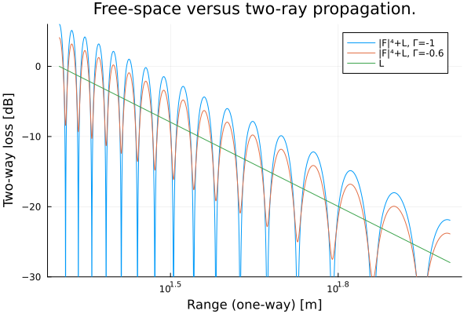

Two-Ray Propagation
This example plots signal strength as function of range, compared to free space power spread.
using ..RadioPropagation
using Plots
c = 3e8;
transmit_height_m = 2;
receive_height_m = 10;
target_range_m = LinRange(20, 100, 10000);
transmit_frequency_hz = 3e9;
λ = c/transmit_frequency_hz;
Γ1 = -1;
Γ2 = -0.6;
F²( Γ ) = RadioPropagation.two_ray_propagation.( target_range_m, transmit_height_m, receive_height_m, transmit_frequency_hz, Γ );
F²1 = F²( Γ1 );
F²2 = F²( Γ2 );
f⁴_db( F² ) = 10*log10.( abs2.( F² ));
freespace_loss_db = 10 .*log10.(λ^2 ./( (4*π)^3 .*target_range_m .^4 ));
bias = freespace_loss_db[1]
plot1 = plot( target_range_m, f⁴_db.(F²1)+freespace_loss_db .-bias,
xlabel = "Range (one-way) [m]",
ylabel = "Two-way loss [dB]",
title = "Free-space versus two-ray propagation.",
ylims = (-30, 6),
label = "|F|⁴+L, Γ=-1",
legend = true,
xaxis =:log,
dpi=300);
plot!( target_range_m, f⁴_db.(F²2)+freespace_loss_db .-bias,
label = "|F|⁴+L, Γ=-0.6",
xaxis =:log );
plot!( target_range_m, freespace_loss_db .-bias,
label = "L",
xaxis =:log );qt.qpa.xcb: could not connect to display
qt.qpa.plugin: From 6.5.0, xcb-cursor0 or libxcb-cursor0 is needed to load the Qt xcb platform plugin.
qt.qpa.plugin: Could not load the Qt platform plugin "xcb" in "" even though it was found.
This application failed to start because no Qt platform plugin could be initialized. Reinstalling the application may fix this problem.
Available platform plugins are: vkkhrdisplay, linuxfb, offscreen, vnc, xcb, minimal, minimalegl, eglfs.
Aborted (core dumped)
connect: Connection refused
GKS: can't connect to GKS socket application
GKS: Open failed in routine OPEN_WS
GKS: GKS not in proper state. GKS must be either in the state WSOP or WSAC in routine ACTIVATE_WS